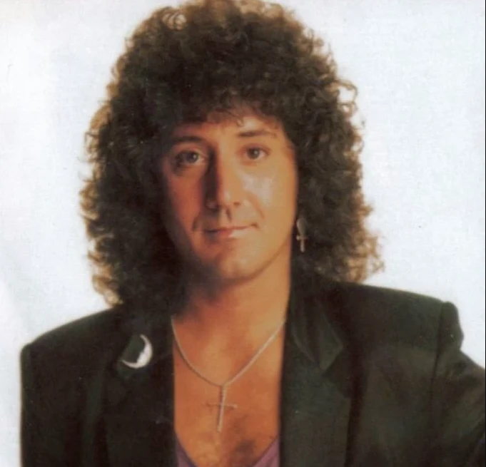
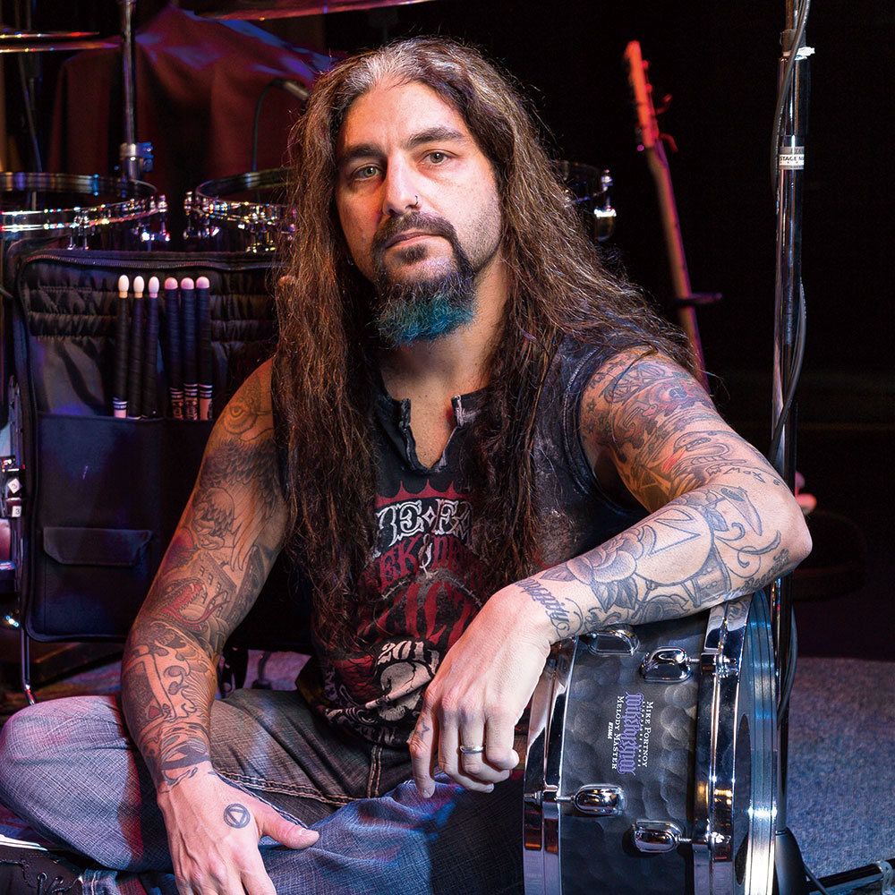
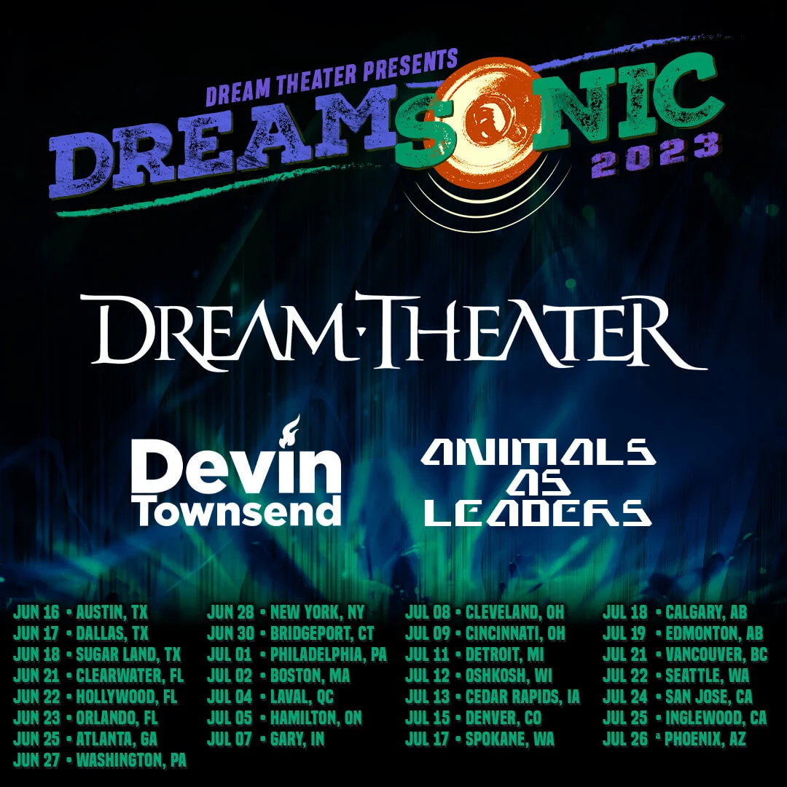

NEWS
MORT DE CHARLIE DOMINICI, EX-CHANTEUR DE DREAM THEATER

Charlie Dominici, chanteur ayant participé à l'écriture et à l'enregistrement du premier album de Dream Theater, "When Dream and Day Unite", est mort le 17 novembre 2023.
Charlie est également celui qui a conçu le fameux "Majesty logo", présent sur toutes les pochettes d'album du groupe. On peut y retrouver toutes les lettres de son nom de famille.
Il s'agit d'un choc non seulement pour les fans du groupe, mais également pour les membres de Dream Theater eux-mêmes qui, malgré leur séparation avec M. Dominici, étaient tout de même restés amis avec lui.
Nous présentons à sa famille et ses amis toutes nos sincères condoléances.
Source
MIKE PORTNOY DE RETOUR CHEZ DREAM THEATER

Mike Portnoy, batteur mondialement reconnu et membre fondateur de Dream Theater, avait quitté le groupe en 2010 suite à sa participation à l'album "Nightmare" d'Avenged Sevenfold. Il a depuis joué dans de très nombreux groupes, y compris The Winery Dogs ainsi que le projet solo de John Petrucci, guitariste de Dream Theater.
Le 25 octobre 2023, son retour au sein de Dream Theater a été annoncé sur les réseaux sociaux, nouvelle reçue avec énormément d'enthousiasme par les fans de la première heure.
Certains signes montraient que Mike se rapprochait de nouveau de son ancien groupe, notamment des photos qu'il a prises de lui-même allant à divers concerts de ses anciencs comparses.
Cela signifie également que Mike Mangini, le batteur l'ayant remplacé depuis 2010, dit finalement "au revoir" à ce groupe avec lequel il a enregistré pas moins de cinq albums.
Source
DREAM THEATER LANCE LA TOURNÉE DREAMSONIC 2023 FT. DEVIN TOWNSEND & ANIMALS AS LEADERS

La tournée Dreamsonic 2023, annoncée le 12 avril 2023, sera l'occasion pour les fans de Dream Theater de voir trois groupes/projets de renommée mondiale : en effet, en plus du groupe susmentionné, nous pourrons y retrouver le projet solo de Devin Townsend ainsi que le groupe de djent Animals as Leaders, ayant fait énormément parler de lui durant la décennie précédente dans la sphère du métal progressif.
La tournée aura lieu aux États-Unis du 16 juin au 26 juillet 2023.
Source